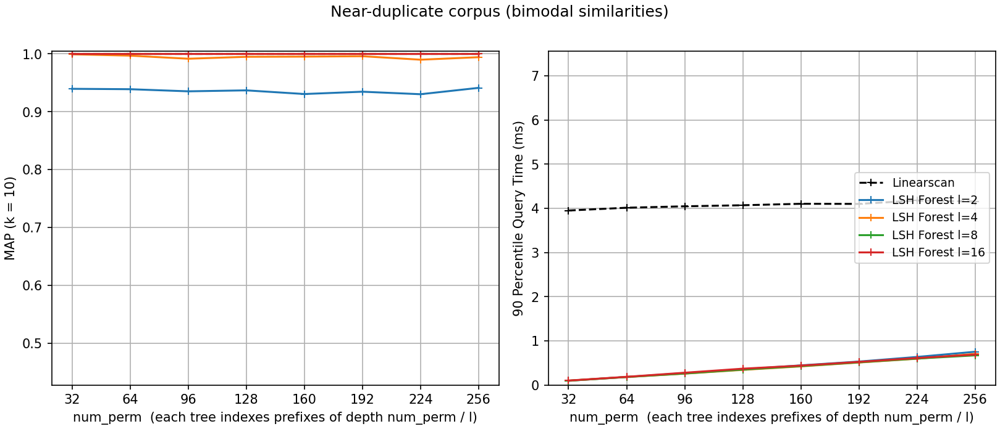
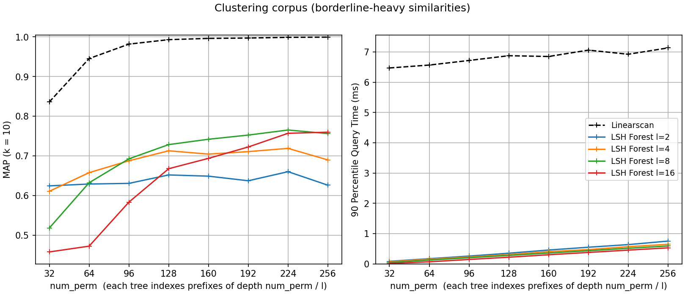
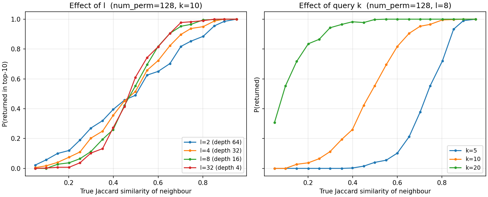

MinHash LSH Forest
MinHash LSH answers radius (threshold) queries; often what you
want instead is the top-k most similar sets. LSH Forest by Bawa et
al. (WWW 2005) is a general LSH data structure that supports top-k
queries, and datasketch.MinHashLSHForest applies it to MinHash:
given the MinHash sketch of a query set, it returns up to k keys
whose sets have approximately the highest Jaccard similarities to
the query.
The interface is similar to datasketch.MinHashLSH, with one
important difference: after adding keys you must call the index
method – keys are not searchable until then.
from datasketch import MinHashLSHForest, MinHash
data1 = ['minhash', 'is', 'a', 'probabilistic', 'data', 'structure', 'for',
'estimating', 'the', 'similarity', 'between', 'datasets']
data2 = ['minhash', 'is', 'a', 'probability', 'data', 'structure', 'for',
'estimating', 'the', 'similarity', 'between', 'documents']
data3 = ['minhash', 'is', 'probability', 'data', 'structure', 'for',
'estimating', 'the', 'similarity', 'between', 'documents']
# Create MinHash objects
m1 = MinHash(num_perm=128)
m2 = MinHash(num_perm=128)
m3 = MinHash(num_perm=128)
for d in data1:
m1.update(d.encode('utf8'))
for d in data2:
m2.update(d.encode('utf8'))
for d in data3:
m3.update(d.encode('utf8'))
# Create a MinHash LSH Forest with the same num_perm parameter
forest = MinHashLSHForest(num_perm=128)
# Add m2 and m3 into the index
forest.add("m2", m2)
forest.add("m3", m3)
# IMPORTANT: must call index() otherwise the keys won't be searchable
forest.index()
# Check for membership using the key
print("m2" in forest)
print("m3" in forest)
# Using m1 as the query, retrieve top 2 keys that have the highest Jaccard
result = forest.query(m1, 2)
print("Top 2 candidates", result)
Benchmarks
Internally, the forest splits the num_perm hash values of each
signature into l prefix trees (“LSH Trees” in the Bawa et al.
paper), each indexing hash-value prefixes of maximum depth
num_perm / l. Unlike the paper, which fixes the tree depth, this
implementation derives it from the MinHash’s num_perm, keeping the
two interfaces coherent. The number of trees is a constructor parameter
(default l=8):
# 16 prefix trees, each of maximum depth 128 / 16 = 8.
forest = MinHashLSHForest(num_perm=128, l=16)
How much accuracy a (num_perm, l) budget buys depends on the corpus,
so the benchmark below runs top-10 queries on two synthetic corpora at
opposite extremes of the similarity distribution – one line per l
– against a linear scan that ranks all indexed sets by MinHash
estimate. Accuracy is the mean average precision
(MAP@10)
relative to the exact-Jaccard top-10; retrieved candidates are re-ranked
by exact Jaccard before scoring, and queries are held out of the index
(benchmark/indexes/lshforest_synthetic_benchmark.py):
a near-duplicate corpus: each query has 1–3 planted near-duplicates (Jaccard 0.6–0.95) among otherwise-disjoint sets, so the true top-k is a short list of clearly similar sets;
a clustering corpus: 10,000 heavily overlapping sets give every query a deep pool of moderately similar neighbours, so the true top-k is a fine ranking among close calls.


The figures share axes. On the near-duplicate corpus every forest with
l >= 4 scores a MAP of 1.0 or within 0.01 of it at every
num_perm: the planted duplicates are far more similar than
everything else, and the prefix search surfaces them every time, in
well under a millisecond versus about 4 ms for the scan. Only l=2
leaves accuracy behind (MAP ~0.94): two trees give a duplicate too few
chances to share a prefix, and no amount of extra depth buys them back.
On the clustering corpus – separating sets that differ by a few
percent of similarity – the split of the hash-value budget between
tree count and tree depth becomes a visible trade-off. With a small
budget, depth is the scarce resource: at num_perm=32, two deep trees rank
best (MAP 0.62 for l=2 against 0.46 for l=16, whose depth-2
prefixes barely discriminate). As the budget grows, the balance tips
toward more trees: l=8 leads from num_perm=128 on and l=16
catches it by 256 (both near 0.76), while l=2 never rises past
about 0.66 – extra depth stops helping once prefixes are already
selective, but extra trees keep adding independent chances to catch a
neighbour. Every configuration plateaus well below the linear scan,
whose ranking uses all num_perm hash values instead of prefix
collisions; that gap is the price of queries an order of magnitude or
more faster (0.01–0.75 ms versus about 7 ms).
Retrieval characteristics
MAP is a single aggregate number; it helps to see how retrieval depends on
how similar a neighbour actually is. The figure below plants, for each
query, one neighbour at every true Jaccard similarity from 0.05 to 0.95,
then measures the probability that forest.query(query, k) returns it
(see benchmark/indexes/lshforest_similarity_benchmark.py).

Probability that a neighbour is returned, as a function of its true Jaccard similarity to the query, on planted synthetic data.
The result is the characteristic LSH soft threshold: neighbours above a certain similarity are almost always returned, those below almost never, with a smooth transition in between. Two parameters move this curve.
Number of trees l (left panel). A query matches the deepest
prefix (length num_perm / l) across all l trees, then shortens it
until it has gathered k candidates. With few, deep trees (small l)
long-prefix matches are rare, so the query shortens the prefix a lot and
sweeps in weaker neighbours – a flatter, less selective curve. With many,
shallow trees (large l) it collects k candidates while the prefix
is still near its maximum, concentrating on the most similar sets – a
sharper curve. The curves cross: above the crossing similarity more trees
give higher recall, below it fewer trees do.
Query k (right panel). Asking for more results makes the query
descend to shorter prefixes, shifting the whole curve to lower similarity:
at k = 20 neighbours down to Jaccard ~0.2 are usually retrieved, while
at k = 5 only those above ~0.7 are. This is exactly why over-retrieving
and then re-ranking (see Tips for Improving Accuracy below) recovers
accuracy – a larger k widens the net enough to catch true neighbours a
tighter query would miss, and exact re-ranking restores precision. Note
that num_perm barely moves these curves: it sets the resolution of
the similarity estimate, not how many candidates the query gathers, so
l and k are the effective retrieval knobs.
Tips for Improving Accuracy
The default parameters may not be good enough for all data. Here are some tips for improving the accuracy of LSH Forest.
Use 2*k: You can use a multiple of k (e.g., 2*k) in the argument, then compute the exact (or approximate using MinHash) Jaccard similarities of the sets referenced by the returned keys, from which you then take the top-k. For example:
# Set our k to 10.
k = 10
# Do work to create index...
# When you query, instead of use k, use 2*k.
result = forest.query(minhash, 2*k)
# Let's say you store the sets in a dictionary (not a good idea for
# millions of sets) referenced by keys, you can use them to compute
# the exact Jaccard similarities of the returned sets to your query set.
# You can also use MinHashes instead.
result = [(key, compute_jaccard(index_sets[key], query_set)
for key in result]
# Then you can take the final top-k.
result = sorted(result, key=lambda x: x[1], reverse=True)[:k]
This is often called
“post-processing”. Because the total number of similarity
computations is still bounded by a constant multiple of k, the
performance won’t degrade too much – however you do have to keep
the original sets (or MinHashes) around somewhere
(in-memory, databases, etc.) so that you
can make references to them. The right panel of the retrieval-characteristics
figure above shows why this works: raising the query k shifts the
retrieval curve toward lower similarity, so a larger k recovers true
neighbours that the tighter query would drop, and the exact re-ranking then
discards the extra low-similarity candidates it swept in.